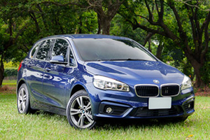
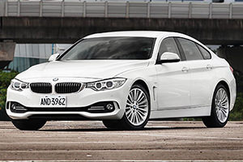

BMW 3 Series Gran Turismo小改款與3 Series其他成員相同，外觀與內裝都僅進行了小幅度的修改，重點同樣集中在動力單元更替，同時車名也因應動力數據而進行調整。
外觀內裝小幅修改，LED導入成辨識焦點
BMW在2009年在5 Series中，推出了一款全新設計、揉合了轎車與旅行車空間概念於一的Gran Turismo車型，滿足消費者對於空間的需求，並保有轎車較為文靜沉著的特色，在全球市場上都獲得不少好評，而在2013年，BMW也為F30世代的3 Series，增列了Gran Turismo車型選擇，近日則是依循車系改款節奏，原廠發表了3 Series Gran Turismo的小改款。
與3 Series Sedan以及Touring相同，3 Series Gran Turismo小改款的外觀造型，僅作出微幅調整，主要差異在於LED的導入，車頭燈組的輪廓線條，與小改款前其實差異不大，但燈條卻改以更為顯眼、高辨識度的單一LED線條勾勒，將品牌經典的環形光條，以極簡風格呈現於外。
車尾燈組也同樣進行修改，造型輪廓同樣與既有相當，但LED燈條樣式卻也帶來不同視覺效果，此外，倒車燈的位置也從尾燈內部上緣，改成位於下緣處的設計；此外，後保桿造型也有所不同，改以更圓潤與層次的線條起伏，原本後保桿下緣的反光片，位置也進行上移以做區隔。
在車室空間的部分，小改款3 Series維持既有的陳設格局，原廠表示在用料上有所升級，而在中控台恆溫空調介面下緣，則是新增了一個USB插孔，一改原先僅在中央扶手箱內處，設有USB與AUX-IN的配置設定。
除此之外，ConnectedDrive系統的操作介面，也同步進行了更新動作，加入圖像式的介面設計，這樣的改變，與新世代7 Series更為相近；據瞭解，新一代的ConnectedDrive介面，是否會在小改款3 Series Gran Turismo登臺時同步導入，因與原廠生產排程有關，目前尚未有確切答案。
3 Series全家族進行週期間小改款，重點改變在於動力單元，原廠首波共推出3款汽油動力，以及5具柴油動力單元；汽油車型共有320i、330i以及340i，其中320i維持既有水準，搭載的B48引擎，能供輸184匹最大馬力，而330i Gran Turismo其實就是小改款前的328i Gran Turismo，呼應其252匹的最大馬力，名稱也更改為330i Gran Turismo。
340i Gran Turismo則是取代原先335i Gran Turismo，車系汽油車型頂級戰力的位置，以代號B58的3.0升直列6缸汽油引擎，取代原先335i所配置的動力單元，最大馬力數據也提升至326匹的水準。柴油車型部分，原廠共計發表了有318d、320d、325d、330d以及335d等5種選擇，其中，318d Gran Turismo以及320d Gran Turismo，動力都較小改款前有所提升，讓柴油3 Series Gran Tusimo動力數據，介於150匹與313匹最大馬力的分佈。
汎德汽車在2013年，將3 Series Gran Turismo導入國內市場，但有鑑於品牌戰線規劃，以及將其與Sedan轎車作出定位區隔，因此國內僅導入汽油車型選擇，而預計在第三季國內發表的小改款，應當也會維持現行、僅汽油車型的規劃設定，而隨著小改款動力與車名的更動，3 Series Gran Turismo將會從既有的320i、328i、335i，改成320i、330i以及340i的車型佈局。
基．本．技．術．規．格
| 車型 | 售價 (萬元) |
排氣量 (c.c.) |
燃料 | 引擎 型式 |
變速 系統 |
傳動 方式 |
最大馬力 (ps/rpm) |
|---|---|---|---|---|---|---|---|
| 320i Gran Turismo Sport Line | 233 | 1998 c.c. | 汽油 | 直列4汽缸 | 八前速手自排 | 後輪驅動 | 184 hp/5000 rpm |
| 330i Gran Turismo M Sport | 286 | 1998 c.c. | 汽油 | 直列4汽缸 | 八前速手自排 | 後輪驅動 | 252 hp/5200 rpm |
| 340i Gran Turismo M Sport | 342 | 2998 c.c. | 汽油 | 直列6汽缸 | 八前速手自排 | 後輪驅動 | 326 hp/5500 rpm |
-

享60期0利率、低月付，BMW「榮耀創新專案」11月加碼實施中
BMW總代理汎德表示，11月份持續加碼實施2017年式BMW車型「榮耀創新專案」，凡11月交車領牌者另享特定車型優惠價格升級駕駛輔助套件、盲點偵測警示等配備...
-

趁勝追擊─BMW 2 Series Gran Tourer斯洛維尼亞試駕，市場沿革篇
當一輛車的銷量，其中能有70％是新客戶，那怕它備受爭議，就車廠營利的角度來看，就是一款相當成功的作品。今天我要提及的這輛車，同樣備受爭議也考驗市場口味，它就是BMW 2 Series Active Tourer/2 Series Gran Tourer...
-

戰力升級，2017年式BMW多數標配「智慧互聯駕駛服務」與iDrive 5.0介面
BMW總代理汎德公司於2016年9月26日公佈2017年式車型配備價格調整，主要將多數車型標準配備「BMW全功能智慧互聯駕駛服務」、並升級為「iDrive 5.0使用介面」...
-

不想承認也不行─BMW 2 Series Gran Tourer斯洛維尼亞試駕
在這趟試駕2 Series Gran Tourer的過程中，我實在很不想承認BMW也能將前驅車調校至如此境界，在這輛已達7人座設定的小型MPV，BMW仍讓駕駛手感直搗心窩，方向盤所能傳遞路感還是熟悉的BMW風味...
-

「沉重」的輕量化科技，BMW傳將縮限碳纖維車體使用
根據Automotive News Europe報導，鑑於碳纖維高昂的成本，BMW為了維持一定的利潤水準，正在縮限碳纖維的使用量，並將輕量化的目標轉移至其他材質，例如鋁合金以及高強度鋼材等...
-

調整配備139萬起入手、價格戰開打，BMW 118i與218i AT都會特式推出
BMW總代理汎德汽車於9月中旬，分別針對麾下118i以及218i Active Tourer，推出了名為都會版的特式車，此一特式版本主要是在配備上做出調整，同時價格也較一般常販版本調降許多...
-

放逐自己的旅程-2017 BMW 340i Gran Turismo M Sport 試駕報告
探索世界是人生的目的。相信很多人都曾想過放逐自己，或許在某一天你突然決定給自己放個假，到時候你會希望陪伴你的，就是BMW 3 Series Gran Turismo...
-

只做最強，BMW3系列運動房車
以駕駛樂趣風靡於車壇的BMW 3 Series，在每一回的世代更迭都帶給人無限驚喜。輔以全新設計的流體力學前、後進氣壩，讓3 Series顯得更有精神...
-

率性的優雅─BMW 420i Gran Coupé Luxury Line試駕體驗
BMW 取其經典車系6 Series之名，推出了6 Series Gran Coupé，擁有品牌旗艦7 Series的大器身段，卻又具備6 Series 雙門Coupé的瀟灑、帥氣，組合成線條絕美的四門跑房車...
-

BMW 3 Series Gran Turismo車款介紹
BMW 3 Series Gran Turismo小改款與3 Series其他成員相同，外觀與內裝都僅進行了小幅度的修改，重點同樣集中在動力單元更替，同時車名也因應動力數據而進行調整...
c2016 MediaBrilliance System Corporation. All Rights Reserved.